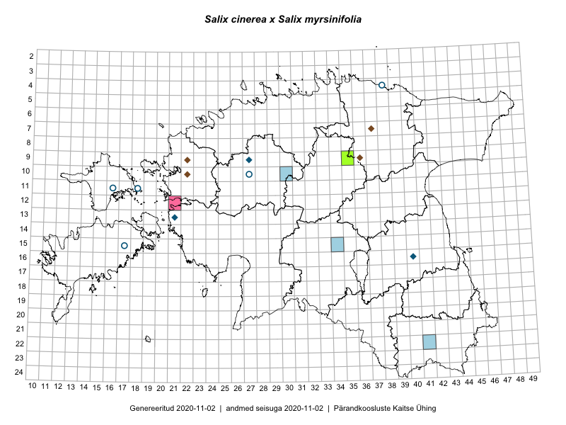

Salix cinerea × Salix myrsinifolia — tuhkur paju × mustjas paju
Salicaceae :: Salix cinerea × Salix myrsinifolia (10)

Kaart põhineb 19 kirjel:
herbaareksemplare 10
PKÜ kirjeid1 4
ELFi kirjeid2 5
Taime kaasaegsed ja ajaloolised leiukohad asuvad 16 ruudus.
Tingmärgid ja ruutude arvud periooditi (U3 / V4 )
█ 2006–2020 (4/–)
◆/◇ 1971–2005 (7/0)
○ 1921–1970 (5/0)
+ kuni 1920 (0/0)
× hävinud (–/0)
? kaheldav (–/0)
| Ruut | Leidja(d) | Leiuaeg | Kirje |
|---|---|---|---|
| 09-35 | Jana-Maria Habicht | 2015-07-30 | TAM0119819: Salix cinerea × Salix myrsinifolia |
| 09-35 | Jana-Maria Habicht | 2015-07-30 | TAM0119820: Salix cinerea × Salix myrsinifolia |
| 11-18 | B. Fromhold-Treu | 1933-06-23 | TU312538: Salix cinerea × Salix myrsinifolia |
| 10-27 | Heinrich Aasamaa | 1936-08-29 | TAM0130781: Salix cinerea × Salix myrsinifolia |
| 09-27 | Heinrich Aasamaa | 1996-07-18 | TAM0130784: Salix cinerea × Salix myrsinifolia |
| 13-21 | Meeli Mesipuu | 2005-08-05 | TAA0112328: Salix cinerea × Salix myrsinifolia |
| 15-17 | Linda Viljasoo | 1959-06-23 | TAA0098551: Salix cinerea × Salix myrsinifolia |
| 04-38 | H. Karu, Linda Viljasoo | 1959-10-08 | TAA0098552: Salix cinerea × Salix myrsinifolia |
| 11-16 | Zinaida Izvekova | 1948-08-02 | TAA0098553: Salix cinerea × Salix myrsinifolia |
| 16-40 | Ülo Niinemets | 1990-04-21 | TAA0098554: Salix cinerea × Salix myrsinifolia |
| 07-37 | Mare Leis, Andrus Kuus, Aivar Sakala | 1997-09-17 | ELF: 750 |
| 09-36 | Mare Leis, Andrus Kuus, Aivar Sakala | 1997-09-16 | ELF: 807 |
| 22-41 | Liis Keerberg | 2010-06-12 | ELF: 15432 |
| 15-34 | Triin Tekko | 2010-08-10 | ELF: 19400 |
| 10-30 | Toivo Sepp | 2010-06-05 | ELF: 20399 |
| 09-27 | 2001-07-19 | PKÜ: 7063 | |
| 10-22 | 2000-09-28 | PKÜ: 2757 | |
| 09-22 | 2000-09-16 | PKÜ: 2813 | |
| 10-22 | 1999-09-17 | PKÜ: 918 |
Pärandkoosluste Kaitse Ühingu (PKÜ) andmebaas sisaldab inventeeritud koosluste kirjeldusi ja liigiloendeid. Kõige enam on andmeid niidutaimede kohta.↩︎
Eestimaa Looduse Fondi (ELF) andmebaas sisaldab inventeeritud koosluste kirjeldusi ja liigiloendeid. Eriti rohkesti on andmeid märgalade kohta.↩︎
Ruutude arv uue atlase andmekogu järgi. Muuhulgas arvestab vanemat herbaariumi, 2005. aasta atlase välitöölehtedelt uuesti digitaliseeritud andmeid jne. Uue atlase andmekogust pärinevad andmed on kaardile kantud siniste sümbolitega.↩︎
Ruutude arv 2005. aasta atlase (Kukk, T., Kull, T., Eesti taimede levikuatlas. Eesti Maaülikool, Põllumajandus- ja Keskkonnainstituut, Tartu, 2005) järgi. Andmeallikana on kasutatud levik.exe programmi, kus igas ruudus on registreeritud vaid uusim leid. Seetõttu on vanemate perioodide kohta andmed puudulikud. Kasutatud levik.exe andmestikus leidub mõningaid kõrvalekaldeid atlase trükis ilmunud versioonist, sagedamini tarnade ja käpaliste seas. Lisaks leidub selles andmestikus valik liike (peamiselt väheste leidudega tulnuktaimed), mille kaarte trükis ei avaldatud. Vana atlase andmed ruutudest, milles ei ole uue atlase andmekogus leide enne 2006. aastat, on kaardil esitatud punaste sümbolitega. Vana atlase andmetel hävinud ja kaheldavaid leiukohti pole hilisemate (taas)leidude põhjal korrigeeritud.↩︎